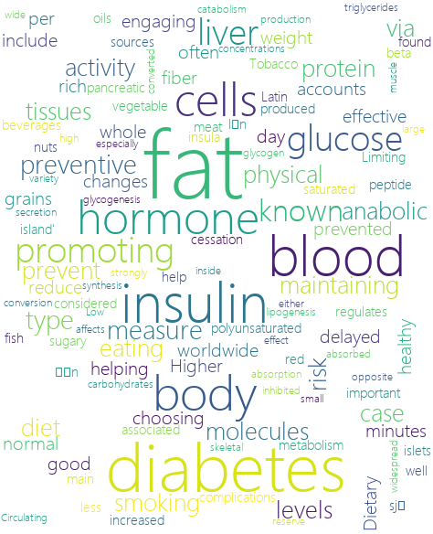

|

|
Diabetes Since my topic is diabetes, I found 5 keywords related to my topic: diabetes, obesity, sugar, fat, prevention and insulin. I stored the text data I gathered and then created these two wordclouds.
Here is the download link of my python code:
ClusteringDataPy.py
Let's have a brief view of my code.
import os
Texts=[]
folderpath=r"E:/GU/501/discussion3/question1/text"
for file in os.listdir(folderpath):
print(file)
filepath=os.path.join(folderpath,file)
with open(filepath,"r",encoding='utf-8') as f:
Texts.append(f.readlines())
Flowers1=Texts[1:3]
Flowers2=Texts[4:6]
import wordcloud
import numpy as np
from PIL import Image
mask=np.array(Image.open(r"E:/GU/501/discussion3/question1/Flower1.jpg"))
Flowers1=[Flower1[0] for Flower1 in Flowers1]
Flowers1=" ".join(Flowers1)
w=wordcloud.WordCloud(font_path=r"msyhl.ttc",mask=mask,width=600,height=600,background_color="white")
w.generate(Flowers1)
w.to_file(r"flower1.png")
mask=np.array(Image.open(r"E:/GU/501/discussion3/question1/Flower2.jpg"))
Flowers2=[Flower2[0] for Flower2 in Flowers2]
Flowers2=" ".join(Flowers2)
w=wordcloud.WordCloud(font_path=r"msyhl.ttc",mask=mask,width=600,height=600,background_color="white")
w.generate(Flowers2)
w.to_file(r"flower2.png")
|